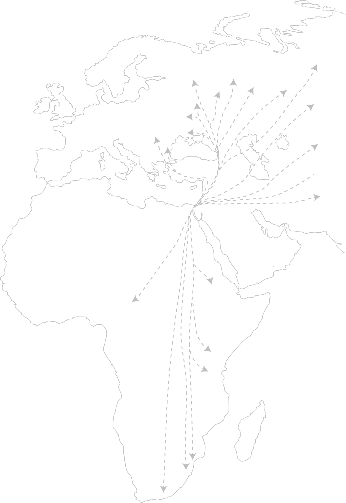
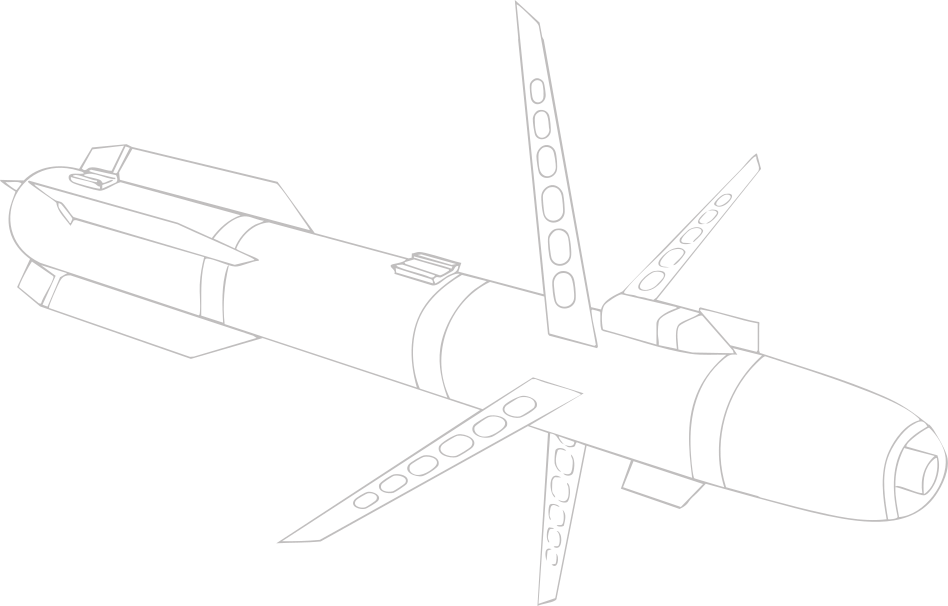
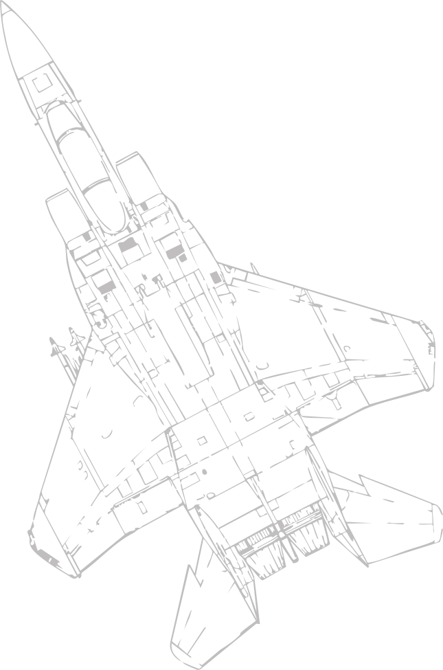

Every Spring and Fall, half a billion migratory birds from over 400 species fly through the skies of Israel and Palestine to traverse between Eurasia and Africa.
Being the only land bridge between the three continents, this narrow corridor of air space sees a scale of avian migration unparalleled almost anywhere else.
Of all the birds migrating through the area, one family is particularly significant—kettles of eagles, vultures, buzzards that circle and swarm the sky in striking numbers. These large birds are known as raptors1, or birds of prey.
1 The term raptor is derived from the Latin word rapio, meaning “to seize or take by force.”
Increasingly, the sighting of birds of prey here carry with it a precarious fate. These are birds of steel, bearing the shapes of drones, missiles, striker jets. Birdwatching has become not a leisurely activity, but a necessity for survival. Because these birds can take your life.
 